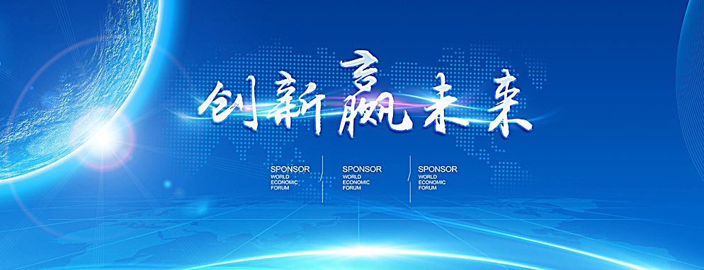

2018-10-16 10:08:34 人民日报
利用化学气相传输法生长单晶时，密封所用的火焰温度高达2000摄氏度。夏季封管时，滚烫的汗珠常常从额头不断流出，流过脸颊和下巴甚至流到眼睛里。
“做科普首先要想清楚受众是哪些人，既要照顾受众需求，又不能太刻意迎合受众，要用平等的方式来对话”
“有时感到疲惫，但每次看到晶体，感觉自己又精神了”
9月11日，早上8点，李治林已经在中科院物理所纳米物理与器件实验室里忙碌了。他是这个实验室的一名研究人员。
30平方米左右的实验室里，堆满了各种仪器设备、实验器材。泡在这里对李治林来说是家常便饭，有时为了完成一项实验，除了吃饭睡觉，得有半个月都要待在这个封闭的空间。李治林说，挑晶体、点电极是他今天上午的主要工作。
李治林的专长是“生长晶体”，也就是利用物质在某些条件下结晶的特性来合成单晶。他拿起一根装有晶体的试管，里面的晶体形状规则、闪亮、非常好看。“生长晶体看似简单，却有大用。上世纪50年代，科学家成功生长出硅单晶，那时候并没有多少人意识到它的重要用途，而现在硅已是半导体技术和电子工业的基础。”
清洗晶体是研究中的必要步骤，即使是这样简单基础的事情，想要做好也需格外细致。比如，清洗液的成分要精心设计，清洗的顺序也很重要。经常清洗一批晶体，大半天就过去了。点电极更是细致活儿，有时候几百微米的样品上就要手动点6个电极，像是在芝麻上做雕刻。
“是不是个头很大，表面光洁如镜，形状还非常规则？我觉得它们饱含了物理和几何的美感。”李治林指着几块砷化钽家族系列单晶说，“这几年，我探索了几十种材料的晶体生长，有时也会感到疲惫，但每次看到晶体，感觉自己又精神了。”
这几块晶体中，最大的尺寸接近1厘米，每个面都非常规则，犹如一颗大钻石，只不过是银灰色的。“通常来说，晶体尺寸越大、质量越高，在科研和应用上越有价值，但也越难生长。砷化钽家族系列单晶能生长到几毫米就很好了，在保证结晶质量和表面光洁的情况下，能长到接近1厘米非常难，至今能做到这一点的研究团队并不多。”李治林说。
在导师指导下，李治林连续在实验室工作，改进晶体生长工艺，用了1个多月时间得到了这个最大尺寸的高质量晶体。接下来他又用了1年多研究究竟是哪些原因影响晶体生长，来保证实验的可重复性。“我想把一项成果中各种因素的影响都弄清楚，为将来的工作提供指导，这样心里才踏实。”
“如果长不好晶体，一定是因为我们对它的影响因素了解得还不够”
下午，测量数据出来，李治林认真地在电脑上做了分类整理和编程分析。他的电脑中有好多文件夹，专门记录各种晶体的实验数据。
李治林在实验室贴有一张自制的日程表。因为实验众多，忙的时候他每天要惦记着几十件事情，一度压力非常大，神经绷得很紧。但几年高强度的实验积累，也使他掌握了丰富的晶体生长和测试的经验。
“有些经验是需要实验者本人探索和体会的，有时对照文献中的方法操作，也不一定能长出想要的晶体，因为设备和环境不一样，而晶体生长对这些因素很敏感。”李治林拿起一支笔打比方，“假设晶体在这样大小的容器里生长，放在加热炉里时，两端接受热辐射的情况就不同，容器倾斜时还要考虑内部气体的对流。另外，密封时，原料中水和氧的微小含量还会受空气湿度的影响，也必须考虑进去。稍不注意，结果就会有很大差异。”
利用化学气相传输法生长单晶时，需要提前把原料密封在石英管里，密封所用的火焰温度高达2000摄氏度。“这道工序也是需要自己来完成的，虽然戴着防护眼镜，但烧到白炽软化状态的石英发出强光，即使是一步之外，皮肤都有灼烧感，更何况还需要近距离观察和操作。冬天还好些，夏季封管时，滚烫的汗珠常常从额头不断流出，流过脸颊和下巴甚至流到眼睛里，非常难受。累的时候，真想偷懒少做几个，但最后还是为了保持进度坚持下来。我想是对科研的兴趣激发了我的潜力。”李治林说。
“如果长不好晶体，一定是因为我们对它的影响因素了解得还不够。”为了探索晶体生长的各种影响因素，多的时候李治林一年内居然做了1000多次实验。“我预期一年努力做300次样品就可以了，没想到做了这么多，那一两年简直可以说是疯狂，回想起来自己都觉得难以置信。”
多数时候，李治林在所里过着三点一线的重复生活，实验占据了他绝大部分时间。“实验虽然很枯燥，但获得了想要的数据，使各种稀奇古怪的想法得到了验证，我很有成就感。”
“我们希望通过回答读者日常生活中的疑问，引发他们思考的乐趣”
“这里最好打个比方，用生活中常见的例子解释；那篇文章的公式要换个表达，或者拿掉，插上一幅漫画最好……”整理完数据，李治林带记者来到物理所的科学咖啡馆，他要和几位研究生讨论中科院物理所微信公众号的文章。
科研之外，李治林是一位科普“达人”，他是物理所科普团队的核心骨干，目前组建了一个20多人的兴趣小组，负责日常科普活动和微信公众号的知识问答等栏目。
几年前，物理所内举行了一场科普比赛，李治林制作的科普展品“悬浮石墨与光控运动”获得一等奖。这款展品让石墨薄片在磁场中悬浮起来，并用激光控制石墨运动。因为新奇有趣且直观展现了石墨抗磁性随光照条件的变化，展品成为物理所公众科普展览活动中的“明星”。李治林因此被所里老师邀请参与公众号的运营。
制作科普展品、写科普文章、参与科普电视节目……李治林对科普工作有了自己的心得和思考，“做科普首先要想清楚受众是哪些人，既要照顾受众需求，又不能太刻意迎合受众，要用平等的方式来对话。”
在回答“为什么云朵不会掉下来”时，面对不同人群李治林给出了不同答案。“对少年儿童，我会说云朵就像柳絮、羽毛或棉花糖一样，很轻很轻，可以在天上飘好久；对懂一些物理知识的中学生，就会拓展说明其中空气阻力的原因；而对物理专业工作者，我会写出论证公式，给出数学模型，并引出该原理在科研中的经典应用。”
“为什么拿相机对着电脑屏幕照相，照片会出现波纹？”在某知识问答社区，李治林对这个问题的回答位列“第一”——获得了1.1万多个点赞。李治林从窗纱等生活中常见的物品讲起，一步一步论证了其中暗含的莫尔条纹理论，还写出了思考的过程。“硬邦邦的物理学知识通常比较枯燥，但与人们生活联系起来就会吸引大家的关注。”李治林说。
“做科普不仅要传播知识，更要传播科学的思维方式。”李治林说，“在互联网时代，单纯地获取知识很容易，但仅仅传播知识还不够。我们希望通过回答读者日常生活中的疑问，引发他们思考的乐趣。”
晚上7点，天色暗下来。吃过晚饭的李治林又转身往实验室走，“打算再忙两三个小时。”（喻思南 涂英玲）